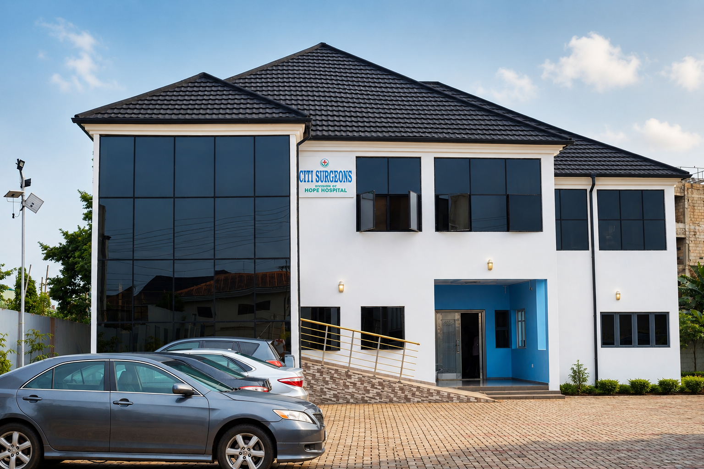
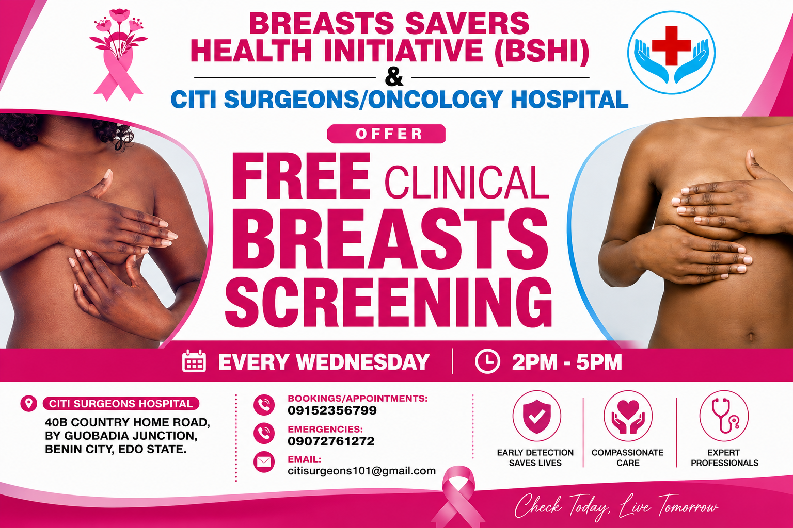

Who We Are
Founded in 1969 and registered with the Edo State Ministry of Health, Citi Surgeons Hospital has been a cornerstone of medical care in Benin City for over five decades. What began as a modest surgical practice in New Benin has evolved into a fully-equipped tertiary surgical facility.
In 2023, the hospital relocated to 40B Country Home Motel Road by Gubobadia Junction, Ward 36A, Oredo, Benin City — a purpose-built centre of excellence equipped with state-of-the-art operating theatres, intensive care facilities, and diagnostic capabilities.
Led by Prof. Moses I. Momoh — FWACS, FICS, and Professor of Surgery at the University of Benin — the hospital brings together senior consultants and sub-specialists committed to delivering outcomes that rival the best institutions globally.
Read Our Full Story
Citi Surgeons Hospital
Ward 36A, Oredo, Benin City · Est. 1969
What We Treat
Comprehensive sub-specialist surgical care delivered by experienced consultants and professors.
Comprehensive abdominal, hernia, soft tissue and gastrointestinal surgical procedures.
Expert surgical management of benign and malignant tumours with multidisciplinary support.
Advanced brain and spinal cord surgical procedures performed by specialist neurosurgeons.
Specialised surgical care designed for infants, children and adolescents in a child-friendly environment.
Comprehensive surgical and non-surgical eye care by specialist ophthalmologists.
Round-the-clock trauma and emergency surgical care available at all times.
+234-915-235-6799Why Citi Surgeons
Every decision we make is driven by one goal: your successful recovery.
Decades of surgical procedures with rigorous safety protocols and clinical governance.
Senior consultants with FWACS, FICS fellowships and university professorial appointments.
Book instantly via WhatsApp for prompt consultation scheduling with our specialists.
Our Accidents & Emergencies unit is staffed and ready around the clock, every day of the year.
Community Outreach
In partnership with the Breasts Savers Health Initiative (BSHI), we offer complimentary clinical breast screenings to every woman in our community.

Every Wednesday
2:00 PM — 5:00 PM
Citi Surgeons / Oncology Hospital, Ward 36A, Oredo, Benin City
Conducted by trained nurses and consultant breast surgeons
Get Started Today
Skip the queue. Reach our team instantly on WhatsApp to book your consultation, ask questions, or get directions to our facility.
Chat with Us on WhatsAppOur Purpose
To provide accessible, high-quality tertiary surgical healthcare to the people of Benin City and the South-South region of Nigeria — combining clinical excellence, compassionate patient care, and continuous medical education.
To become the foremost tertiary surgical institution in Nigeria's South-South zone — recognised for clinical outcomes, training of the next generation of surgeons, and the relentless pursuit of patient welfare above all else.